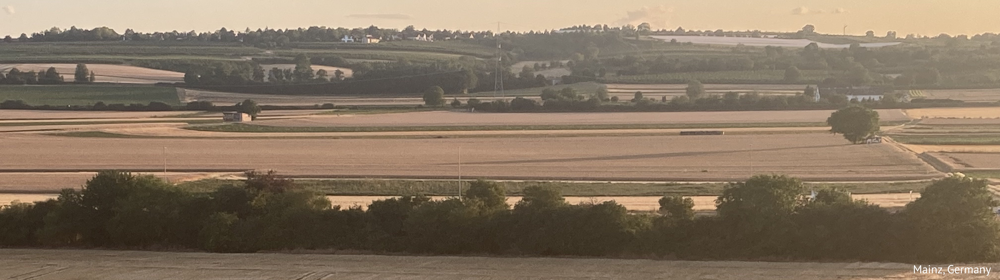

This site presents the Continuative Expressions Database, a typological database of continuative (‘still’) expressions in the world’s languages. The principles of data collection and the analysis of the continuative expressions included in the database are described in the following paper:
Panova, Anastasia. 2023. Towards a typology of continuative expressions. Submitted.If you use the database in your research, please cite the aforementioned paper.
The database contains information on 177 continuative expressions in 136 languages. The stratified (sub-)sample used in (Panova 2023) includes 154 continuative expressions in 120 languagues.
The main part of the database is a .csv table shown here. The rows of the table correspond to individual continuative expressions. The first few columns correspond to metadata (language name, references to a description and examples, etc.), the rest of the columns contain information on four parameters:
All the columns of the .csv table are described below:
| column | description |
|---|---|
id_number |
the ID of the continuative expression |
family_code |
the Glottocode of the language family |
family |
the name of the language family (according to the Glottolog) |
macroarea |
the macroarea where the language is spoken (Eurasia, Africa, North America, South America, Australia and Papunesia) |
iso |
iso-code of the language |
language |
the name of the language (according to the Glottolog) |
included |
yes/yes2 — the language is
included in the stratified 120-language sample (the value
yes2 is used for technical reasons in cases where there are
more than one continuative expression in the language); no
— the language is not included in the stratified 120-language
sample |
form |
the continuative expression as given in the source |
source |
reference to the description of the continuative expression |
pages |
pages in the source where the description of the continuative expression can be found |
comment |
additional comments on the diachronic source, predicate restrictions, competing expressions, etc. |
example |
the names of the image file showing an example of the continuative expression |
example_source |
reference to the source where the example can be found |
example_page |
the page in the source where the example can be found |
morphosynt_type |
the standardized morphosyntactic type of the
continuative expression (adverb/particle,
affix, auxiliary, not_clear) |
morphosynt_type_as_in_source |
the morphosyntactic type of the continuative expression as given in the source |
non_emphatic |
yes — the continuative expression is
non-emphatic, no — the continutative expression is
emphatic, not clear — there is not enough evidence to
postulate the non-emphatic status of the continuative expression but
there are examples suggesting that it might be the case |
non_emphatic_comment |
references to the examples which show non-emphatic uses of the continuative expression |
other_uses |
(standardized) non-continuative meanings of the continuative expression |
other_uses_comment |
(all) non-continuative meanings of the continuative expression |
meaning_with_negation |
the meaning of the continuative expression when it is combined with negation |
meaning_with_negation_comment |
references to the examples which show the continuative expression combined with negation |
maturation |
features of the continuative expression which can be considered mature in terms of (Dahl 2004) |
Values in the fields source, pages,
example, example_source and
example_page refer to two other parts of the database:
The table below shows the collected information on each of the
continuative expressions in the database. To see more columns, click on
the Column visibility button.
You can download the table in the .csv format here.
Please contact Anastasia Panova (anastasia.b.panova@gmail.com) in case you have any questions about the database.